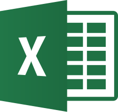

Compétences
Expertise Technique
- Analyse structurelle & contrôle qualité (Eurocodes)
- Diagnostic de l'existant & phasage en site occupé
- Lecture critique des études techniques
Gestion de Projet
- Pilotage opérationnel & suivi travaux
- Coordination multi-intervenants
- Gestion des aléas, planning, budget
Management
- Encadrement d'équipes terrain (jusqu'à 10 personnes)
- Communication technique claire
- Reporting & transmission d'informations
Outils Numériques Maîtrisés
Revit
AutoCAD
MS Project

Excel